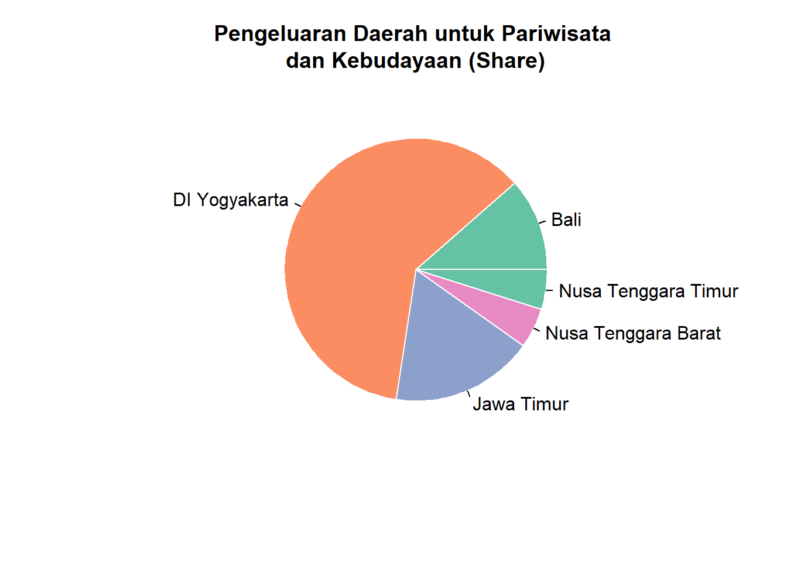
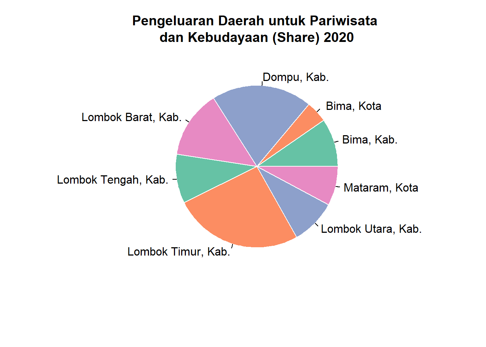
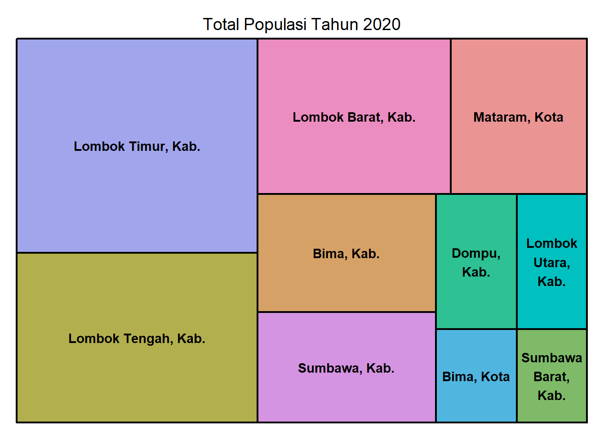
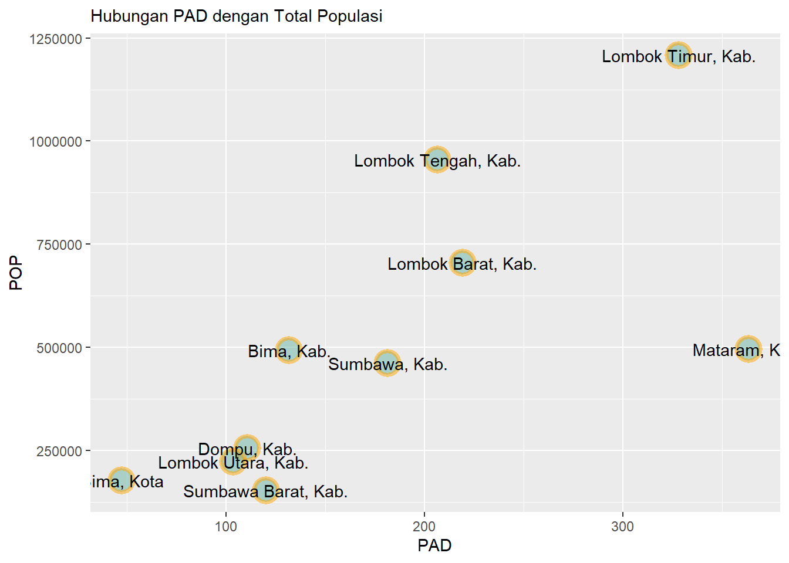

Eksplorasi Data Ekonomi dan Kebijakan di Nusa Tenggara Barat - Data INDODAPOER
code
eksplorasi
visualization
indodapoer
Author
Deri Siswara
Published
August 28, 2023
Nusa Tenggara Barat (NTB) ialah sebuah provinsi di Indonesia yang berada di bagian tengah Kepulauan Nusa Tenggara di antara provinsi Bali di sebelah barat dan provinsi Nusa Tenggara Timur di sebelah Timur. Ibu kota provinsi ini berada di kota Mataram. Nusa Tenggara Barat memiliki 8 Kabupaten dan 2 Kota, termasuk kota Mataram. Pada tahun 2020, penduduk Nusa Tenggara Barat berjumlah 5.320.092 jiwa, dengan kepadatan 264 jiwa/km2.
Dalam menunjang penelitian terkait pemetaaan sosial ekonomi di Nusa Tenggara Barat (NTB), publikasi ini memuat kondisi eksisting makroekonomi di NTB. Ekolorasi ini menggunakan data INDODAPOER. List data yang digunakan yakni:
Pengeluaran Daerah untuk Pariwisata dan Kebudayaan
tourism<-datadapoer%>%filter(Series.Name=="Tourism and culture function expenditure (in IDR)")%>%select(c(Provinces.Name,5:14))colnames(tourism)<-c('Provinces', 2011:2020)library(data.table)tourism<-melt(setDT(tourism), id.vars =c("Provinces"), variable.name ="Year")tourism$value<-as.numeric(tourism$value)target<-c("Bali, Prop.","DI Yogyakarta, Prop.", 'Jawa Timur, Prop.', "Nusa Tenggara Timur, Prop.","Nusa Tenggara Barat, Prop.")tourism<-tourism%>%filter(Provinces%in%target)%>%filter(Year==2020)tourism
Provinces Year value
1: Bali, Prop. 2020 58659967293
2: DI Yogyakarta, Prop. 2020 313198463331
3: Jawa Timur, Prop. 2020 90073235455
4: Nusa Tenggara Barat, Prop. 2020 25107197016
5: Nusa Tenggara Timur, Prop. 2020 25083710468
tourism2<-datadapoer%>%filter(Series.Name=="Tourism and culture function expenditure (in IDR)")%>%select(c(Provinces.Name,5:14))colnames(tourism2)<-c('Provinces', 2011:2020)library(data.table)tourism2<-melt(setDT(tourism2), id.vars =c("Provinces"), variable.name ="Year")tourism2$value<-as.numeric(tourism2$value)target<-c("Bali, Prop.","DI Yogyakarta, Prop.", 'Jawa Timur, Prop.',"Nusa Tenggara Barat, Prop.")target2<-c(2011:2020)tourism2<-tourism2%>%filter(Provinces%in%target)tourism2$Provinces<-rep(c("Bali","DI Yogyakarta","Jawa Timur","Nusa Tenggara Barat"),10)
ntb<-datadapoer2%>%filter(Series.Name=="Tourism and culture function expenditure (in IDR)")%>%select(c(Provinces.Name,5:14))colnames(ntb)<-c('Provinces', 2011:2020)library(data.table)ntb<-melt(setDT(ntb), id.vars =c("Provinces"), variable.name ="Year")ntb$value<-as.numeric(ntb$value)table(ntb$Provinces)
Bima, Kab. Bima, Kota Dompu, Kab. Lombok Barat, Kab.
10 10 10 10
Lombok Tengah, Kab. Lombok Timur, Kab. Lombok Utara, Kab. Mataram, Kota
10 10 10 10
Sumbawa Barat, Kab. Sumbawa, Kab.
10 10
target<-c("Bima, Kab." , " Bima, Kota" , "Dompu, Kab." , 'Lombok Barat, Kab.' , 'Lombok Tengah, Kab.' , 'Lombok Timur, Kab.' , 'Lombok Utara, Kab.' , 'Mataram, Kota',' Sumbawa Barat, Kab.' , 'Sumbawa, Kab.')ntb<-ntb%>%filter(Provinces%in%target)%>%filter(Year==2020)ntb
Provinces Year value
1: Bima, Kab. 2020 9262319023
2: Dompu, Kab. 2020 4141634265
3: Lombok Barat, Kab. 2020 19250550732
4: Lombok Tengah, Kab. 2020 13014977321
5: Lombok Timur, Kab. 2020 9398937078
6: Lombok Utara, Kab. 2020 24777372338
7: Mataram, Kota 2020 8768332874
8: Sumbawa, Kab. 2020 7450859535
library(RColorBrewer)myPalette<-brewer.pal(4, "Set2")pie(tourism$value, labels =c("Bali","DI Yogyakarta", 'Jawa Timur', "Nusa Tenggara Barat", "Nusa Tenggara Timur"), border="white", col=myPalette, main="Pengeluaran Daerah untuk Pariwisata \ndan Kebudayaan (Share)")

NTB merupakan provinsi di Indonesia yang memiliki kekayaan beragam wisata pulau, salah satu yang terkenal adalah Pulau Lombok. Pulau Lombok merupakan salah satu Daerah Tujuan wisata (DTW) di Indonesia, yang merupakan bagian dari propinsi NTB. Potensi pariwisata yang dimiliki oleh Pulau Lombok merupakan salah satu usaha dalam rangka menggali sumber-sumber pendapatan daerah yang bertujuan untuk meningkatkan kesejahteraan masyarakat.
Keseriusan pemerintah daerah untuk sektor pariwisata dapat tercermin pada indikator fiskal Pengeluaran Daerah untuk Pariwisata dan Kebudayaan. Pie chart di atas menunjukkan perbandingan Pengeluaran Daerah untuk Pariwisata dan Kebudayaan di NTB dengan berbagai daerah yang secara populasi dan karakteristik cukup dekat.
Dapat terlihat bahwa pengeluaran daerah untuk pariwisata dan kebudayaan di berbagai daerah terdapat perbedaan yang signifikan. Daerah yang memiliki pengeluaran daerah untuk pariwisata dan kebudayaan yang terbesar adalah provinsi di Yogyakarta hal ini karena di DI Yogyakarta terdapat Candi Borobudur sebagai warisan budaya Indonesia yang dalam perawatannya membutuhkan anggaran yang cukup besar. Jika dibandingkan dengan Bali dan Nusa Tenggara Timur,pengeluaran untuk pariwisata dan kebudayaan NTB masih rendah dibandingkan dengan Bali. NTB secara pariwisata masih kalah dibandingkan dengan Bali. NTB masih mengandalkan sektot pertanian sebagai sumber pendapatan utama daerah.
Kemudian Jika dilihat dari data historical 10 tahun terakhir, pengeluaran untuk pariwisata dan kebudayaan di NTB cenderung stagnan atau berfluktuasi dan tidak memiliki kecenderungan tren meningkat atau menurun. Jika dibandingkan dengan DI Yogyakarta itu cukup berbeda, DI Yogyakarta memiliki trend yang meningkat sepanjang tahun untuk pengeluaran dalam pariwisata dan kebudayaan.Pergerakan pengeluaran daerah pariwisata dan kebudayaan di NTB selaras dengan Nusa Tenggara Timur, Bali dan Jawa Timur. Sektor pariwisata di NTB dapat berpotensi menjadi sektor unggulan untuk NTB yang seharusnya dapat dimanfaatkan dengan maksimal. Aktualisasinta dapat melalui anggaran yang dikeluarkan lebih besar dalam aspek ini.
pie(ntb$value, labels =target, border="white", col=myPalette, main="Pengeluaran Daerah untuk Pariwisata \ndan Kebudayaan (Share) 2020")

Sementara itu, jika dilihar dari kabupaten kota di Lombok Timur pengeluaran daerah untuk pariwisata dan kebudayaan terbesar terdapat pada Kabupaten Dompu dan Kabupaten Lombok Timur.
1.2 2. Pendapatan Asli daerah
pad<-datadapoer2%>%filter(Series.Name=="Total Own Source Revenue/PAD (in IDR)")%>%select(c(Provinces.Name,5:14))colnames(pad)<-c('Provinces', 2011:2020)library(data.table)pad<-melt(setDT(pad), id.vars =c("Provinces"), variable.name ="Year")pad$value<-as.numeric(pad$value)pad<-pad%>%filter(Year==2020)pad$value<-pad$value/(10^9)
Jika dilihat dari pendapatan asli daerah di kabupaten kota di NTB, yang tertinggi adalah kota Mataram disusul oleh Lombok Timur. Sumber utama pendapatan asli daerah Lombok Timur berasal dari pajak daerah, retribusi daerah, pendapatan asli daerah lain-lain yang sah. Adapun komponen pajak daerah dan retribusi daerah yaitu: pajak kendaraan bermotor, bea balik nama kendaraan bermotor, pajak bahan bakar kendaraan bermotor, pajak hotel dan restoran, pajak hiburan, pajak reklame, pajak penerangan jalan, pajak pengambilan dan pengelolaan bahan galian Golongan C, serta pajak pemanfaatan air bawah tanah dan air permukaan.
1.3 3. Total Populasi
pop<-datadapoer2%>%filter(Series.Name=="Total Population (in number of people)")%>%select(c(Provinces.Name,5:14))colnames(pop)<-c('Provinces', 2011:2020)library(data.table)pop<-melt(setDT(pop), id.vars =c("Provinces"), variable.name ="Year")pop$value<-as.numeric(pop$value)pop<-pop%>%filter(Year==2020)
library(treemap)treemap(pop, index="Provinces", vSize="value", type="index", title ="Total Populasi Tahun 2020")

Ternyata populasi terbesar di Lombok NTB adalah Kabupaten Lombok Timur
padpop<-cbind(pad$value, pop$value)colnames(padpop)<-c("PAD","POP")padpop<-as.data.frame(padpop)row.names(padpop)<-pad$Provincesggplot(padpop, aes(x=PAD, y=POP))+geom_point( color="orange", fill="#69b3a2", shape=21, alpha=0.5, size=6, stroke =2)+theme( legend.position="none", plot.title =element_text(size=11))+ggtitle("Hubungan PAD dengan Total Populasi")+geom_text(label=rownames(padpop), nudge_x =0.25, nudge_y =0.25, check_overlap =T)

Total populasi sejalan dengan besarnya Pendapatan asli daerah kecuali di kota Mataram. Kota Mataram populasinya kecil tapi memiliki pendapatan asli daerah yang tinggi, tidak heran karena Mataram adalah ibu kota, pusat administrasi, dan pusat bisnis di NTB.
1.4 4. Gini Index dan Poverty Rate
gini<-datadapoer2%>%filter(Series.Name=="Gini index")%>%select(c(Provinces.Name,5:14))colnames(gini)<-c('Provinces', 2011:2020)library(data.table)gini<-melt(setDT(gini), id.vars =c("Provinces"), variable.name ="Year")gini$value<-as.numeric(gini$value)gini<-gini%>%filter(Year==2020)poverty<-datadapoer2%>%filter(Series.Name=="Poverty Rate (in % of population)")%>%select(c(Provinces.Name,5:14))colnames(poverty)<-c('Provinces', 2011:2020)library(data.table)poverty<-melt(setDT(poverty), id.vars =c("Provinces"), variable.name ="Year")poverty$value<-as.numeric(poverty$value)poverty<-poverty%>%filter(Year==2020)
Kondisi kesejahteraan dan kemiskinan di NTB dapat dicerminkan oleh indikator indeks gini untuk kesenjangan dan poverty rate untuk kemiskinan. Kesenjangan di NTB rata-rata diatas 0,3 hanya ada satu yang di bawah 0,3 yaitu di Sumbawa Barat, artinya kesenjangan nya cukup kecil. Kemudian untuk poverty rate atau tingkat kemiskinan tertinggi terjadi di Kabupaten Lombok Utara sementara itu dilihat dari indeks gini sebenarnya Lombok Utara bukan yang paling tinggi untuk gini teks. Indeks gini paling tinggi adalah Lombok Tengah. Tingkat kemiskinan terendah terdapat di Kota Bima dan Kota Mataram. Tapi di Bima dan Mataram gini indexnya itu cukup tinggi sehingga walaupun kemiskinan yang kecil tapi terjadi kesenjangan yang cukup tinggi di Bima dan Mataram.
1.5 5. Labor rate dan Unemployment Rate
u<-datadapoer2%>%filter(Series.Name=="Number of people employed")%>%select(c(Provinces.Name,5:14))colnames(u)<-c('Provinces', 2011:2020)library(data.table)u<-melt(setDT(u), id.vars =c("Provinces"), variable.name ="Year")u$value<-as.numeric(u$value)u<-u%>%filter(Year==2020)un<-datadapoer2%>%filter(Series.Name=="Number of people unemployed")%>%select(c(Provinces.Name,5:14))colnames(un)<-c('Provinces', 2011:2020)library(data.table)un<-melt(setDT(un), id.vars =c("Provinces"), variable.name ="Year")un$value<-as.numeric(un$value)un<-un%>%filter(Year==2020)labor<-datadapoer2%>%filter(Series.Name=="Number of people in labor force")%>%select(c(Provinces.Name,5:14))colnames(labor)<-c('Provinces', 2011:2020)library(data.table)labor<-melt(setDT(labor), id.vars =c("Provinces"), variable.name ="Year")labor$value<-as.numeric(labor$value)labor<-labor%>%filter(Year==2020)u$value<-u$value/labor$value*100un$value<-un$value/labor$value*100alllabor<-cbind(u$Provinces, u$value,un$value)colnames(alllabor)<-c("Provinces", 'Labor Rate', 'Unemployment Rate')alllabor<-as.data.frame(alllabor)alllabor<-melt(setDT(alllabor),id.vars="Provinces", variable.name ="Rate")alllabor$value<-round(as.numeric(alllabor$value),2)
Kota atau Kabupaten di NTB yang memiliki tingkat pengangguran tertinggi itu berada di Kota Mataram, sedangkan yang memiliki tingkat pengangguran terendah itu berada di Kabupaten Dompu.
Source Code
---title: "Eksplorasi Data Ekonomi dan Kebijakan di Nusa Tenggara Barat - Data INDODAPOER"date: 8/28/2023 author: - name: Deri Siswara title-block-banner: trueformat: html: theme: flatly code-fold: false code-tools: true toc: false number-sections: truelink-citations: yescategories: [R, Eksplorasi, Visualization, Indodapoer]image: "indocover.png"---```{r setup, include=FALSE}knitr::opts_chunk$set(echo =TRUE,eval =TRUE,message =FALSE,warning =FALSE,fig.align ="center")```Nusa Tenggara Barat (NTB) ialah sebuah provinsi di Indonesia yang berada di bagian tengah Kepulauan Nusa Tenggara di antara provinsi Bali di sebelah barat dan provinsi Nusa Tenggara Timur di sebelah Timur. Ibu kota provinsi ini berada di kota Mataram. Nusa Tenggara Barat memiliki 8 Kabupaten dan 2 Kota, termasuk kota Mataram. Pada tahun 2020, penduduk Nusa Tenggara Barat berjumlah 5.320.092 jiwa, dengan kepadatan 264 jiwa/km2.Dalam menunjang penelitian terkait pemetaaan sosial ekonomi di Nusa Tenggara Barat (NTB), publikasi ini memuat kondisi eksisting makroekonomi di NTB. Ekolorasi ini menggunakan data INDODAPOER. List data yang digunakan yakni:- Pengeluaran Daerah untuk Pariwisata dan Kebudayaan- Pendapatan Asli daerah- Total Populasi- Gini Index dan Poverty Rate- Labor rate dan Unemployment Rate## Persiapan Data```{r}library(readxl)datadapoer <-read_excel("datadapoer.xlsx")head(datadapoer)``````{r}library(tidyverse)names(datadapoer) <-names(datadapoer) %>%make.names()head(datadapoer)``````{r}datadapoer2 <-read_excel("datadapoer2.xlsx")head(datadapoer2)``````{r}library(tidyverse)names(datadapoer2) <-names(datadapoer2) %>%make.names()head(datadapoer2)```### 1. Pengeluaran Daerah untuk Pariwisata```{r}tourism <- datadapoer %>%filter(Series.Name=="Tourism and culture function expenditure (in IDR)") %>%select(c(Provinces.Name,5:14))colnames(tourism) <-c('Provinces', 2011:2020)library(data.table)tourism <-melt(setDT(tourism), id.vars =c("Provinces"), variable.name ="Year")tourism$value <-as.numeric(tourism$value)target <-c("Bali, Prop.","DI Yogyakarta, Prop.", 'Jawa Timur, Prop.', "Nusa Tenggara Timur, Prop.","Nusa Tenggara Barat, Prop.")tourism <- tourism %>%filter(Provinces%in% target) %>%filter(Year==2020)tourism``````{r}tourism2 <- datadapoer %>%filter(Series.Name=="Tourism and culture function expenditure (in IDR)") %>%select(c(Provinces.Name,5:14))colnames(tourism2) <-c('Provinces', 2011:2020)library(data.table)tourism2 <-melt(setDT(tourism2), id.vars =c("Provinces"), variable.name ="Year")tourism2$value <-as.numeric(tourism2$value)target <-c("Bali, Prop.","DI Yogyakarta, Prop.", 'Jawa Timur, Prop.',"Nusa Tenggara Barat, Prop.")target2 <-c(2011:2020)tourism2 <- tourism2 %>%filter(Provinces %in% target)tourism2$Provinces <-rep(c("Bali","DI Yogyakarta","Jawa Timur","Nusa Tenggara Barat"),10)``````{r}ntb <- datadapoer2 %>%filter(Series.Name=="Tourism and culture function expenditure (in IDR)") %>%select(c(Provinces.Name,5:14))colnames(ntb) <-c('Provinces', 2011:2020)library(data.table)ntb <-melt(setDT(ntb), id.vars =c("Provinces"), variable.name ="Year")ntb$value <-as.numeric(ntb$value)table(ntb$Provinces)target <-c("Bima, Kab." , " Bima, Kota" , "Dompu, Kab." , 'Lombok Barat, Kab.' , 'Lombok Tengah, Kab.' , 'Lombok Timur, Kab.' , 'Lombok Utara, Kab.' , 'Mataram, Kota',' Sumbawa Barat, Kab.' , 'Sumbawa, Kab.' )ntb <- ntb %>%filter(Provinces%in% target) %>%filter(Year==2020)ntb``````{r}library(RColorBrewer)myPalette <-brewer.pal(4, "Set2") pie(tourism$value, labels =c("Bali","DI Yogyakarta", 'Jawa Timur', "Nusa Tenggara Barat", "Nusa Tenggara Timur"), border="white", col=myPalette, main="Pengeluaran Daerah untuk Pariwisata \ndan Kebudayaan (Share)")```NTB merupakan provinsi di Indonesia yang memiliki kekayaan beragam wisata pulau, salah satu yang terkenal adalah Pulau Lombok. Pulau Lombok merupakan salah satu Daerah Tujuan wisata (DTW) di Indonesia, yang merupakan bagian dari propinsi NTB. Potensi pariwisata yang dimiliki oleh Pulau Lombok merupakan salah satu usaha dalam rangka menggali sumber-sumber pendapatan daerah yang bertujuan untuk meningkatkan kesejahteraan masyarakat.Keseriusan pemerintah daerah untuk sektor pariwisata dapat tercermin pada indikator fiskal *Pengeluaran Daerah untuk Pariwisata dan Kebudayaan*. Pie chart di atas menunjukkan perbandingan Pengeluaran Daerah untuk Pariwisata dan Kebudayaan di NTB dengan berbagai daerah yang secara populasi dan karakteristik cukup dekat.Dapat terlihat bahwa pengeluaran daerah untuk pariwisata dan kebudayaan di berbagai daerah terdapat perbedaan yang signifikan. Daerah yang memiliki pengeluaran daerah untuk pariwisata dan kebudayaan yang terbesar adalah provinsi di Yogyakarta hal ini karena di DI Yogyakarta terdapat Candi Borobudur sebagai warisan budaya Indonesia yang dalam perawatannya membutuhkan anggaran yang cukup besar. Jika dibandingkan dengan Bali dan Nusa Tenggara Timur,pengeluaran untuk pariwisata dan kebudayaan NTB masih rendah dibandingkan dengan Bali. NTB secara pariwisata masih kalah dibandingkan dengan Bali. NTB masih mengandalkan sektot pertanian sebagai sumber pendapatan utama daerah.```{r}library(writexl)tourism2 <-read_excel('tourism2.xlsx')library(ggplot2)library(dplyr)library(hrbrthemes)tourism2 %>%ggplot( aes(x=Year, y=value/(10^9), group = Provinces, color=Provinces)) +geom_line(size=1) +geom_point(shape=21, color="black", fill="#69b3a2", size=2) +theme_ipsum() +ylab("Value") +ggtitle("Tourism and culture function expenditure (in trillion IDR) 2011-2020") +theme(legend.position="bottom", plot.title =element_text(size=11))```Kemudian Jika dilihat dari data historical 10 tahun terakhir, pengeluaran untuk pariwisata dan kebudayaan di NTB cenderung stagnan atau berfluktuasi dan tidak memiliki kecenderungan tren meningkat atau menurun. Jika dibandingkan dengan DI Yogyakarta itu cukup berbeda, DI Yogyakarta memiliki trend yang meningkat sepanjang tahun untuk pengeluaran dalam pariwisata dan kebudayaan.Pergerakan pengeluaran daerah pariwisata dan kebudayaan di NTB selaras dengan Nusa Tenggara Timur, Bali dan Jawa Timur. Sektor pariwisata di NTB dapat berpotensi menjadi sektor unggulan untuk NTB yang seharusnya dapat dimanfaatkan dengan maksimal. Aktualisasinta dapat melalui anggaran yang dikeluarkan lebih besar dalam aspek ini.```{r}pie(ntb$value, labels = target, border="white", col=myPalette, main="Pengeluaran Daerah untuk Pariwisata \ndan Kebudayaan (Share) 2020")```Sementara itu, jika dilihar dari kabupaten kota di Lombok Timur pengeluaran daerah untuk pariwisata dan kebudayaan terbesar terdapat pada Kabupaten Dompu dan Kabupaten Lombok Timur.### 2. Pendapatan Asli daerah```{r}pad <- datadapoer2 %>%filter(Series.Name=="Total Own Source Revenue/PAD (in IDR)") %>%select(c(Provinces.Name,5:14))colnames(pad) <-c('Provinces', 2011:2020)library(data.table)pad <-melt(setDT(pad), id.vars =c("Provinces"), variable.name ="Year")pad$value <-as.numeric(pad$value)pad <- pad %>%filter(Year==2020)pad$value <- pad$value/(10^9)``````{r}pad %>%mutate(Provinces =fct_reorder(Provinces, value)) %>%ggplot( aes(x=Provinces, y=value)) +geom_bar(stat="identity", fill="#f68060", alpha=.6, width=.4) +coord_flip() +xlab("") +ggtitle("Pendapatan Asli Daerah (dalam miliar rupiah) 2020")+theme_bw()```Jika dilihat dari pendapatan asli daerah di kabupaten kota di NTB, yang tertinggi adalah kota Mataram disusul oleh Lombok Timur. Sumber utama pendapatan asli daerah Lombok Timur berasal dari pajak daerah, retribusi daerah, pendapatan asli daerah lain-lain yang sah. Adapun komponen pajak daerah dan retribusi daerah yaitu: pajak kendaraan bermotor, bea balik nama kendaraan bermotor, pajak bahan bakar kendaraan bermotor, pajak hotel dan restoran, pajak hiburan, pajak reklame, pajak penerangan jalan, pajak pengambilan dan pengelolaan bahan galian Golongan C, serta pajak pemanfaatan air bawah tanah dan air permukaan.### 3. Total Populasi```{r}pop <- datadapoer2 %>%filter(Series.Name=="Total Population (in number of people)") %>%select(c(Provinces.Name,5:14))colnames(pop) <-c('Provinces', 2011:2020)library(data.table)pop <-melt(setDT(pop), id.vars =c("Provinces"), variable.name ="Year")pop$value <-as.numeric(pop$value)pop <- pop %>%filter(Year==2020)``````{r}library(treemap)treemap(pop,index="Provinces",vSize="value",type="index",title ="Total Populasi Tahun 2020" )```Ternyata populasi terbesar di Lombok NTB adalah Kabupaten Lombok Timur```{r}padpop <-cbind(pad$value, pop$value)colnames(padpop) <-c("PAD","POP")padpop <-as.data.frame(padpop)row.names(padpop) <- pad$Provincesggplot(padpop, aes(x=PAD, y=POP)) +geom_point(color="orange",fill="#69b3a2",shape=21,alpha=0.5,size=6,stroke =2) +theme(legend.position="none",plot.title =element_text(size=11)) +ggtitle("Hubungan PAD dengan Total Populasi") +geom_text(label=rownames(padpop), nudge_x =0.25, nudge_y =0.25, check_overlap = T)```Total populasi sejalan dengan besarnya Pendapatan asli daerah kecuali di kota Mataram. Kota Mataram populasinya kecil tapi memiliki pendapatan asli daerah yang tinggi, tidak heran karena Mataram adalah ibu kota, pusat administrasi, dan pusat bisnis di NTB.### 4. Gini Index dan Poverty Rate```{r, fig.width = 10}gini <- datadapoer2 %>%filter(Series.Name=="Gini index") %>%select(c(Provinces.Name,5:14))colnames(gini) <-c('Provinces', 2011:2020)library(data.table)gini <-melt(setDT(gini), id.vars =c("Provinces"), variable.name ="Year")gini$value <-as.numeric(gini$value)gini <- gini %>%filter(Year==2020)poverty <- datadapoer2 %>%filter(Series.Name=="Poverty Rate (in % of population)") %>%select(c(Provinces.Name,5:14))colnames(poverty) <-c('Provinces', 2011:2020)library(data.table)poverty <-melt(setDT(poverty), id.vars =c("Provinces"), variable.name ="Year")poverty$value <-as.numeric(poverty$value)poverty <- poverty %>%filter(Year==2020)``````{r}library(ggpubr)a <-ggplot(gini, aes(x=Provinces, y=value)) +geom_segment( aes(x=Provinces, xend=Provinces, y=0, yend=value), color="skyblue") +geom_point( color="blue", size=4, alpha=0.6) +theme_light() +coord_flip() +theme(panel.grid.major.y =element_blank(),panel.border =element_blank(),axis.ticks.y =element_blank() )b <-ggplot(poverty, aes(x=Provinces, y=value)) +geom_segment( aes(x=Provinces, xend=Provinces, y=0, yend=value), color="skyblue") +geom_point( color="blue", size=4, alpha=0.6) +theme_light() +coord_flip() +theme(panel.grid.major.y =element_blank(),panel.border =element_blank(),axis.ticks.y =element_blank() ) ggarrange(a, b, labels =c("Gini Index", "Poverty Rate"),ncol =2, nrow =1)```Kondisi kesejahteraan dan kemiskinan di NTB dapat dicerminkan oleh indikator indeks gini untuk kesenjangan dan poverty rate untuk kemiskinan. Kesenjangan di NTB rata-rata diatas 0,3 hanya ada satu yang di bawah 0,3 yaitu di Sumbawa Barat, artinya kesenjangan nya cukup kecil. Kemudian untuk poverty rate atau tingkat kemiskinan tertinggi terjadi di Kabupaten Lombok Utara sementara itu dilihat dari indeks gini sebenarnya Lombok Utara bukan yang paling tinggi untuk gini teks. Indeks gini paling tinggi adalah Lombok Tengah. Tingkat kemiskinan terendah terdapat di Kota Bima dan Kota Mataram. Tapi di Bima dan Mataram gini indexnya itu cukup tinggi sehingga walaupun kemiskinan yang kecil tapi terjadi kesenjangan yang cukup tinggi di Bima dan Mataram.### 5. Labor rate dan Unemployment Rate```{r}u <- datadapoer2 %>%filter(Series.Name=="Number of people employed") %>%select(c(Provinces.Name,5:14))colnames(u) <-c('Provinces', 2011:2020)library(data.table)u <-melt(setDT(u), id.vars =c("Provinces"), variable.name ="Year")u$value <-as.numeric(u$value)u <- u %>%filter(Year==2020)un <- datadapoer2 %>%filter(Series.Name=="Number of people unemployed") %>%select(c(Provinces.Name,5:14))colnames(un) <-c('Provinces', 2011:2020)library(data.table)un <-melt(setDT(un), id.vars =c("Provinces"), variable.name ="Year")un$value <-as.numeric(un$value)un <- un %>%filter(Year==2020)labor <- datadapoer2 %>%filter(Series.Name=="Number of people in labor force") %>%select(c(Provinces.Name,5:14))colnames(labor) <-c('Provinces', 2011:2020)library(data.table)labor <-melt(setDT(labor), id.vars =c("Provinces"), variable.name ="Year")labor$value <-as.numeric(labor$value)labor <- labor %>%filter(Year==2020)u$value <- u$value/labor$value*100un$value <- un$value/labor$value*100alllabor<-cbind(u$Provinces, u$value,un$value)colnames(alllabor) <-c("Provinces", 'Labor Rate', 'Unemployment Rate')alllabor <-as.data.frame(alllabor)alllabor<-melt(setDT(alllabor),id.vars="Provinces", variable.name ="Rate")alllabor$value <-round(as.numeric(alllabor$value),2)``````{r}ggplot(alllabor, aes(x = Rate, y = value, fill = Provinces)) +geom_col(position ="dodge") +theme_bw() +ggtitle("Ketenagakerjaan")```Kota atau Kabupaten di NTB yang memiliki tingkat pengangguran tertinggi itu berada di Kota Mataram, sedangkan yang memiliki tingkat pengangguran terendah itu berada di Kabupaten Dompu.